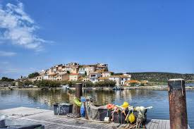

Étangs de
Bages-Sigean


⟹ Nature & Patrimoine ⟸
Le vestige d'un immense golfe antique. L'étang de Bages-Sigean est l'un des derniers grands témoins du golfe qui entourait Narbonne dans l'Antiquité. Le paysage était alors très différent : la mer pénétrait loin dans les terres, le massif de la Clape formait une île et plusieurs bras de l'Aude débouchaient dans un vaste ensemble lagunaire. Les textes et l'archéologie évoquent cette « mer narbonnaise », parfois désignée comme lacus Rubresus, au cœur de laquelle circulaient navires, barques de transbordement et marchandises.
L'avant-port de Narbo Martius. Dès avant la fondation de la colonie romaine de Narbo Martius en 118 av. J.-C., des navires méditerranéens fréquentent le secteur de La Nautique. Les nombreuses amphores retrouvées témoignent notamment d'importations de vins italiens. À l'époque romaine, l'étang appartient à un système portuaire particulièrement élaboré : les grands navires pouvaient mouiller dans les zones profondes, puis leurs cargaisons étaient transférées sur des embarcations plus légères capables de rejoindre Narbonne par les chenaux et le fleuve. La Nautique, Mandirac, le Castelou, Saint-Martin et les accès de Gruissan formaient ainsi les différentes pièces d'un même complexe maritime.

Deux millénaires de transformation du paysage. Les alluvions de l'Aude, les sables poussés par les courants côtiers et la formation de cordons littoraux ont progressivement fermé l'ancien golfe. Des chenaux se sont colmatés, des îles se sont rattachées au continent et la communication avec la Méditerranée s'est réduite. Aujourd'hui, les échanges d'eau avec la mer s'effectuent principalement par le grau de Port-la-Nouvelle. Ce lent processus explique la faible profondeur de la lagune et son extraordinaire mosaïque de vasières, îles, roselières, sansouïres et anciens salins.
Des villages tournés vers l'étang. Bages, Peyriac-de-Mer, Sigean et Port-la-Nouvelle ont longtemps vécu au rythme de la lagune. La pêche lagunaire y a développé des savoir-faire particuliers : petites embarcations, filets adaptés aux chenaux et aux migrations des poissons, connaissance des vents, de la salinité et des saisons. Anguilles, muges, loups et autres espèces ont alimenté une économie modeste mais durable. La vigne, l'olivier et l'élevage complétaient ces ressources sur les terres environnantes.
Le sel, autre richesse de la lagune. Le climat sec, le fort ensoleillement, le vent et les eaux peu profondes ont favorisé très tôt l'exploitation du sel sur le littoral narbonnais. Autour de Peyriac-de-Mer et de Sigean, les salins ont profondément marqué le paysage. Les anciennes digues, bassins et ouvrages hydrauliques restent visibles ; les passerelles de Peyriac permettent aujourd'hui de parcourir une partie de cet héritage industriel. L'étang du Doul, ancienne zone liée aux salins, constitue un milieu hypersalin remarquable, mais sa salinité varie et ne doit pas être présentée comme une valeur fixe.
Un espace stratégique jusqu'à l'époque contemporaine. La position de l'étang, entre Narbonne et la mer, lui a conservé une fonction de circulation et d'échanges pendant des siècles. L'ouverture et l'aménagement de Port-la-Nouvelle au XIXe siècle ont déplacé une part croissante de l'activité maritime vers le grau et le port moderne. Les voies ferrées, les routes et l'industrialisation du littoral ont ensuite modifié les usages, sans effacer complètement la pêche traditionnelle.
Une lagune fragile. Au XXe siècle, l'urbanisation, les rejets domestiques et industriels, l'eutrophisation et les modifications hydrauliques ont montré la vulnérabilité du milieu. La qualité des eaux lagunaires dépend en effet autant des échanges avec la mer que des apports provenant de tout le bassin versant. Ces problèmes ont progressivement conduit à renforcer l'assainissement, le suivi scientifique et la gestion concertée des zones humides.
Un patrimoine naturel d'importance internationale. Avec environ 5 500 hectares, Bages-Sigean est la plus vaste lagune du complexe narbonnais. Ses îles, ses roselières et ses berges accueillent flamants roses, hérons, aigrettes, sternes, limicoles et de nombreux migrateurs. Plusieurs îles et secteurs de rivage ont été acquis ou protégés par le Conservatoire du littoral, tandis que Natura 2000 et le Parc naturel régional de la Narbonnaise en Méditerranée participent à la préservation du site.
Un paysage culturel autant que naturel. L'étang est donc bien davantage qu'un décor : c'est un ancien espace portuaire romain devenu territoire de pêcheurs et de sauniers, puis zone humide protégée. Les silhouettes de Bages et de Peyriac, les îles, les anciens salins et les traces archéologiques racontent près de deux mille ans d'adaptation à un milieu où la frontière entre terre et mer n'a jamais cessé de se déplacer.
Réserve africaine de Sigean : en bordure directe des étangs, un grand parc animalier de semi-liberté.
Massif de la Clape : à l'ouest, un massif calcaire couvert de garrigue et de vignes surplombant la lagune.
Narbonne : cathédrale Saint-Just et Palais des Archevêques, à quelques kilomètres.
Peyriac-de-Mer : village pittoresque et sentiers de découverte des anciens salins.